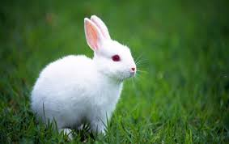

|
Alaska |
Despite its name, the Alaska Rabbit originates in Germany, rather than Alaska.[1] It is a medium-sized rabbit breed, weighing around 3–4 kg (7-9 lb) with glossy black fur, any colour other than black is a fault for this breed |
 |
American Rabbit |
The American Rabbit is a breed of rabbit, recognized by the American Rabbit Breeders Association (ARBA) in 1917. By the ARBA standard, American rabbits have a mandolin body shape and a coat ideal for use as fur.[1] It has also been noted for a good 'sweet' temperament and good mothering abilities.[2] As with all domestic rabbits, the American breed is of the species Oryctolagus cuniculus, the European wild rabbit. |
|  |
Chinchilla rabbits |
Chinchilla rabbits are a group of three rabbit breeds that have been bred for a coat that resembles that of chinchillas.[1] Despite their name, they are not related to and cannot interbreed with chinchillas, which are a species of rodent. Rabbits are lagomorphs. A mutation diluted the yellow pigment in the hairs to almost white, changing in this way the color of the fur of the wild rabbit (agouti) into chinchilla. |
 |
American Fuzzy Lop |
The American Fuzzy Lop is a rabbit breed recognized by the American Rabbit Breeders Association (ARBA). It is similar in appearance to a Holland Lop. However, the American Fuzzy Lop is a wool breed and will have wool similar to the Angora breeds although the wool will be shorter than that of a commercial Angora. The American fuzzy lop has to weigh up to 4 pounds in order to be shown. |
 |
Florida White
|
The Florida White is a relatively small breed rabbit originally produced for the laboratory or as a smaller meat rabbit.[1] It is all white in colour with no other markings, with albino red eyes. It is a recognised American Rabbit Breeders Association (ARBA) breed.[2] |
 |
Dutch rabbit |
The Dutch rabbit, also known as Hollander or Brabander is easily identifiable by its characteristic colour pattern, was once the most popular of all rabbit breeds. However, after dwarf rabbits were developed, the popularity of the Dutch rabbit dwindled. Nevertheless, the Dutch rabbit remains one of the top ten most popular breeds worldwide. |
|
Hirundinidae |
The family Hirundinidae is adapted to aerial feeding. They have a slender streamlined body, long pointed wings and a short bill with a wide gape. The feet are adapted to perching rather than walking, and the front toes are partially joined at the base. |
 |
rex rabbit
|
The term rex rabbit (without capitalization) refers informally to one of at least nine breeds of domestic rabbit (or a specimen thereof or similar thereto). One such breed is the Rex, which is recognized by the American Rabbit Breeders Association (ARBA)[1][2] but not by the British Rabbit Council (BRC).[3][4] Other modern-day rex rabbit breeds are listed below. Care must be taken to distinguish the rex rabbit breeds from the three types of rex rabbit fur for which they are known. |
 |
Polish rabbit
|
The Polish rabbit is not a dwarf breed of domestic rabbit since they lack the dwarf gene, most often bred by fanciers (as opposed to hobbyists) and commonly exhibited in rabbit shows. Despite its name, the Polish rabbit likely originated in England, not Poland.[1] The breed known in the UK as Polish is the breed known in the US as Britannia Petite.[1] The breed known in the US as Polish is unknown in the UK |
 |
Thrianta
|
The Thrianta is a breed of domestic rabbit that is brilliant red in color, with fawn under its paws and tail. Originating in the Netherlands,[1] the Thrianta was further developed in Germany before being exported to the United Kingdom in the early 1980s. During the 1990s, the breed arrived in the United States from both the Netherlands and England. The Thrianta breed is recognized by the American Rabbit Breeders Association (ARBA)[2] and by the British Rabbit Council (BRC).[3] The Thrianta breed is rare in Australia with only a few active breeders |